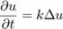
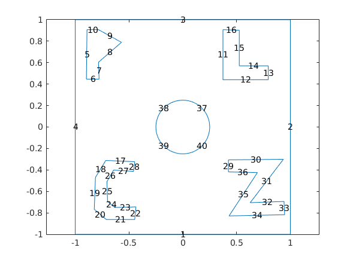
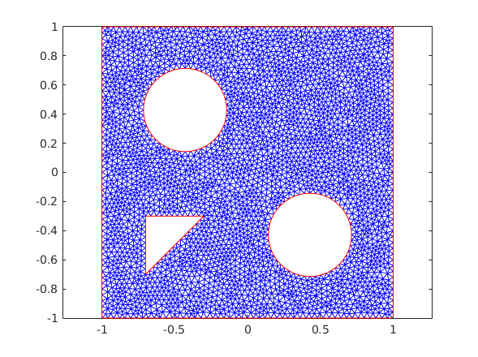
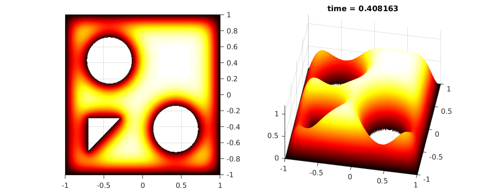

Contents
file: pde_heat_transfer_2D_v1.m author: Polcz Péter <ppolcz@gmail.com>
Created on 2016.12.07. Wednesday, 13:38:48
% fname: full path of the actual file pcz_cmd_fname('fname'); persist = pcz_persist(fname); %persist.backup();
Heat Equation on a Square Plate
The basic heat equation is

Geommetry 0
L = 1; xyRect = [-L -L ; L -L ; L L ; -L L]; pdeGeom0 = geomDataFromPolygon(xyRect); figure, pdegplot(pdeGeom0, 'edgeLabels', 'on'), axis equal
Geommetry 1
% Create a geometry entity and append to the pde model L = 1; nHoles = 2; R = 2*L/(2+2*nHoles+(nHoles-1)); xyRect = [-L -L ; L -L ; L L ; -L L]; holes = zeros(nHoles*nHoles,3); holeCounter =1; x = -L + 2*R; for i = 1:nHoles y = -L + 2*R; for j = 1:nHoles holes(holeCounter,:) = [x y R]; holeCounter = holeCounter + 1; y = y + 3*R; end x = x+3*R; end pdeGeom1 = [... geomDataFromPolygon(xyRect) ... geomDataFromPolygon([-0.7 -0.7 ; -0.7 -0.3 ; -0.3 -0.3]) ... geomDataOfCircularHoles(holes([2,3],:)) ... ]; figure, pdegplot(pdeGeom1, 'edgeLabels', 'on'), axis equal
Geommetry 2
% Create a geometry entity and append to the pde model L = 1; nHoles = 2; R = 2*L/(2+2*nHoles+(nHoles-1)); xyRect = [-L -L ; L -L ; L L ; -L L]; smile = [ -0.8062 -0.5084 -0.4860 -0.6770 -0.1601 -0.7388 0.4466 -0.8511 0.6376 -0.6096 0.6994 -0.2949 0.4972 -0.1433 0.3399 -0.3230 -0.0534 -0.4803 -0.3399 -0.3174 -0.6096 -0.1264 ]; nose = [ -0.0362 0.2563 -0.1532 -0.2006 0.0139 -0.0613 ]; holes = zeros(nHoles*nHoles,3); holeCounter =1; x = -L + 2*R; for i = 1:nHoles y = -L + 2*R; for j = 1:nHoles holes(holeCounter,:) = [x y R]; holeCounter = holeCounter + 1; y = y + 3*R; end x = x+3*R; end pdeGeom2 = [... geomDataFromPolygon(xyRect) ... geomDataFromPolygon(smile) ... geomDataFromPolygon(nose) ... geomDataOfCircularHoles(holes([2,4],:)) ... ]; figure, pdegplot(pdeGeom2, 'edgeLabels', 'on'), axis equal
Geommetry 3 - EGO
% Create a geometry entity and append to the pde model L = 1; nHoles = 1; R = 2*L/(2+2*nHoles+(nHoles-1)); xyRect = [-L -L ; L -L ; L L ; -L L]; P = [ -0.8904 0.9073 -0.8961 0.4466 -0.7781 0.4466 -0.7837 0.6039 -0.5702 0.7893 -0.7837 0.9073 ]; L = [ 0.3736 0.9073 0.3736 0.4410 0.7949 0.4410 0.7949 0.5702 0.5253 0.5702 0.5253 0.9017 ]; C = [ -0.4466 -0.3230 -0.7163 -0.3118 -0.8118 -0.4691 -0.8230 -0.7669 -0.7107 -0.8624 -0.4466 -0.8624 -0.4354 -0.7444 -0.6320 -0.7500 -0.6994 -0.6938 -0.7051 -0.5084 -0.6433 -0.4017 -0.4579 -0.4129 ]; Z = [ 0.4242 -0.4185 0.4242 -0.3062 0.9354 -0.3006 0.6264 -0.7051 0.9410 -0.6938 0.9466 -0.8174 0.4298 -0.8287 0.6938 -0.4242 ]; pdeGeom3 = [... geomDataFromPolygon(xyRect) ... geomDataFromPolygon(P) ... geomDataFromPolygon(L) ... geomDataFromPolygon(C) ... geomDataFromPolygon(Z) ... geomDataOfCircularHoles([0 0 0.25]) ... ]; figure, pdegplot(pdeGeom3, 'edgeLabels', 'on'), axis equal
PDE model
Create a PDE Model with a single dependent variable
numberOfPDE = 1; pdem = createpde(numberOfPDE); pdeGeom = pdeGeom1; geometryFromEdges(pdem,pdeGeom);
Problem Definition
k = 0.025; c = k; a = 0; f = 0; d = 1;
Apply Boundary Conditions
% Solution is zero at all four outer edges of the square applyBoundaryCondition(pdem,'Edge',1:size(pdeGeom,2), 'u', 0);
Generate Mesh
msh = generateMesh(pdem,'Hmax',0.04); figure; pdemesh(pdem); axis equal
Initial Conditions
[p,~,t] = meshToPet(msh); if 1 u0 = ones(size(p,2),1); else u0 = zeros(size(p,2),1); ix = find(sqrt(p(1,:).^2+p(2,:).^2)<0.5); u0(ix) = ones(size(ix)) * 1.2; end
Idointervallum, lepeskoz
nframes = 50; tlist = linspace(0,1,nframes);
Itt tortenik a PDE megoldasa
u1 = parabolic(u0,tlist,pdem,c,a,f,d);
66 successful steps 0 failed attempts 134 function evaluations 1 partial derivatives 16 LU decompositions 133 solutions of linear systems
Plot FEM Solution
To speed up the plotting, we interpolate to a rectangular grid.
fig = figure('Position', [168 562 982 386], 'Color', 'white'); colormap(hot); x = linspace(-1,1,301); y = x; [~,tn,a2,a3] = tri2grid(p,t,u0,x,y); umax = max(max(u1)); umin = min(min(u1)); for j = 21 % 1:nframes, u = tri2grid(p,t,u1(:,j),tn,a2,a3); figure(fig) subplot(121); surf(x,y,u); view([0,89.999]) caxis([umin umax]); axis([-1 1 -1 1 0 2]); shading interp; subplot(122); surf(x,y,u); view([10,60]) caxis([umin umax]); axis([-1 1 -1 1 0 1.2]); shading interp; title(sprintf('time = %g', tlist(j))) pause(0.05) if j == 20 drawnow persist.savefig(fig, 'heat_diffusion_poster.png'); pause(0.5) end % Felvétel % frames(j) = getframe(fig); end % v = VideoWriter(persist.timefl('fig','heat_diffusion.avi')); % open(v) % writeVideo(v,frames) % close(v)